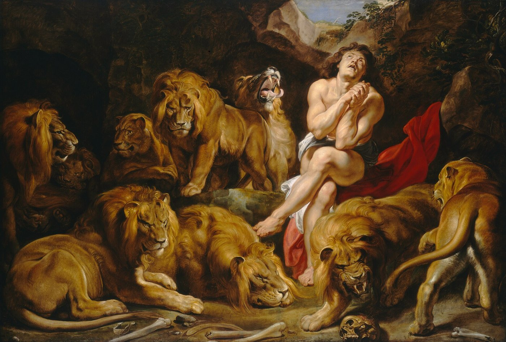

Daniel 6 — The Mister Translation

Daniel 6. Rubens has the prayer, the lions and the cave, and the lions are looking at Daniel; he leaves out the stone and the angel of verse 23. The bones at the foot of the picture are his, and are not in the text until verse 25, where they belong to the accusers.

Translator's Notes — verse by verse
⭐ The numbers, and the language. The Hebrew Bible counts the last verse of Belshazzar’s night as the first of this chapter, so this page’s verse 1 is the English Bibles’ 5:31 and this page’s verse 2 is their 6:1; from verse 2 on, each English verse is one number behind. The verse numbers here are the Hebrew ones. The chapter is in Aramaic, as is all of Daniel from 2:4 to the end of chapter 7, the way chapters 2, 3 and 4 already on these pages are (Daniel 3:28).
⭐ Darius, and a written and a read pair. “And Darius the Mede received the kingdom, being about sixty-two years old”: the Hebrew text prints “Mede” twice, as it was written, madya, and as it was read, mada’ah, a ketiv/qere pair, and the Hebrew column keeps both. The chapter has eight such pairs in all (verses 1, 14, 17, 21, 23, 26, 27 and 29). The book does not give Darius’s father here; Daniel 9:1 calls him the son of Ahasuerus.
⭐ A hundred and twenty satraps. The KJV has “It pleased Darius to set over the kingdom an hundred and twenty princes”, the NIV “It pleased Darius to appoint 120 satraps”, the NWT 1984 “he set up over the kingdom one hundred and twenty satraps”, the Douay “a hundred and twenty governors” and the TLB “Darius divided the kingdom into 120 provinces, each under a governor”. “Satrap”, achashdarpan, is a Persian word, and so is sarakh, “president” (dictionary).
⭐ An extraordinary spirit. “An extraordinary spirit” stands in one verse of the Hebrew Bible, this one, and the book has the near form of it for Daniel in Daniel 5:12. The word is yattira, “more than usual”, left over, extra. The KJV has “because an excellent spirit was in him”, the NIV “by his exceptional qualities”, the NWT 1984 “an extraordinary spirit was in him”, the Douay “a greater spirit of God was in him” and the TLB “he had great ability”.
⭐ No ground, no fault. The rivals look for illah, a ground of complaint, and shechitah, a fault, corruption, and find neither, “because he was faithful”, meheiman. The KJV has “they could find none occasion nor fault”, the NIV “tried to find grounds for charges”, the NWT 1984 “seeking to find some pretext against Daniel”, the Douay “sought to find occasion against Daniel” and the TLB “searching for some fault”. Then their idea: “in the law of his God” stands in this one verse, bedat Elaheh; the same Aramaic is written of Ezra’s commission, “the law of the God of heaven” (Ezra 7:12). The KJV has “concerning the law of his God”, the NIV “unless it has something to do with the law of his God” and the TLB “Our only chance is his religion!”.
⭐ “Live forever”, and the law that does not pass away. “O king, live forever” stands in five verses, Daniel 2:4, 3:9, 5:10, this one and 6:22, the first two of them now on these pages, and verse 22 has Daniel say it to Darius from the pit. The trap is a sentence in the rulers’ own mouths: “the law of Media and Persia” stands in two verses, here and verse 13, “which does not pass away” stands in two verses, the same two, and a related saying of the Persian court is at Esther 1:19 (now on these pages), “that it not pass away”, said of a decree about Vashti. The KJV has “according to the law of the Medes and Persians, which altereth not”, the NIV “in accordance with the law of the Medes and Persians, which cannot be repealed”, the NWT 1984 “according to the law of the Medes and the Persians, which is not annulled” and the TLB “sign it so that it cannot be canceled or changed”.
⭐ The windows, and the knees. What Daniel does is told in four small pieces: “windows open” stands in this one verse, in his upper room, toward Jerusalem; “he knelt on his knees” stands in this one verse; “three times a day” stands in two verses, this one and verse 14, where the accusers repeat it; and “prayed and gave thanks” stands in this one verse, with the second verb, moda, thanks. The orientation is the prayer of Solomon, “if they pray toward this city that you have chosen” (1 Kings 8:48, now on these pages). The KJV has “his windows being open in his chamber toward Jerusalem, he kneeled upon his knees three times a day”, the NIV “where the windows opened toward Jerusalem”, the NWT 1984 “the windows in his roof chamber being open for him toward Jerusalem”, the TLB “he went home and knelt down as usual in his upstairs bedroom, with its windows open toward Jerusalem” and the Douay “opening the windows in his upper chamber towards Jerusalem”.
⭐ “Of the sons of the exile of Judah”. The accusers say what Daniel is: “of the sons of the exile of Judah” stands in three verses, Daniel 2:25, 5:13 and this one, the first of them on these pages. The KJV has “of the children of the captivity of Judah”, the NIV “one of the exiles from Judah”, the NWT 1984 “who is of the exiles of Judah”, the Douay “of the children of the captivity of Juda” and the TLB “one of the Jewish captives”.
⭐ The king labors. Darius is “greatly displeased” and “set his mind on Daniel to rescue him”; mishtaddar, “he labored”, is a rare verb, hatsalutheh, “to deliver him”. The KJV has “was sore displeased with himself”, the NIV “he was greatly distressed; he was determined to rescue Daniel”, the NWT 1984 “it was very displeasing to him” and the TLB “the king was very angry with himself for signing the law”. The sun goes down on him: “until the going down of the sun”.
⭐ A king bound by his own law. The rulers say it once more, “no interdict or statute that the king establishes may be changed”, and the king gives the order. His words to Daniel are the only comfort the chapter gives him: “he will rescue you”, yeshezivinnakh, stands in this one verse, with shezav, the verb of Nebuchadnezzar’s “who is the god who will deliver you?” (Daniel 3:15, now on these pages; dictionary). Here a king uses it as a wish for the man he is condemning. The KJV has “Thy God whom thou servest continually, he will deliver thee”, the NIV “May your God, whom you serve continually, rescue you!”, the NWT 1984 “He himself will rescue you” and the Douay “Thy God, whom thou always servest, he will deliver thee”.
⭐ The stone, the seals. A stone is laid on the mouth of the den and the king seals it with “his signet and the signet of his nobles”: “with the signet of his nobles” stands in this one verse, so that nothing is changed “concerning Daniel”: the verb is the same one as the interdict’s “that it not be changed”, and what must not change is tsevu, the king’s purpose; a stone with a seal is also what is set at another tomb (Matthew 27:66, now on these pages). The KJV has “the king sealed it with his own signet, and with the signet of his lords”, the NIV “with his own signet ring and with the rings of his nobles”, the NWT 1984 “with his signet ring and with the signet ring of his grandees” and the TLB “with his own signet ring and with that of his government”.
⭐ The night. The king fasts, has no diversions brought, and “his sleep fled”, which stands in this one verse. The KJV has “and his sleep went from him”, the NIV “And he could not sleep”, the NWT 1984 “his very sleep fled from him”, the Douay “even sleep departed from him” and the TLB “didn’t sleep all night”.
⭐ At dawn. “At dawn”, bishparpara, stands in this one verse, and “in the light” stands in this one verse: the king gets up at first light and runs. His cry is “servant of the living God”, which stands in this one verse, with “the living God”, Elaha chayya, in two verses, here and verse 27, in the king’s own decree (dictionary). The KJV has “servant of the living God”, the NIV “servant of the living God”, the NWT 1984 “servant of the living God” and the TLB “servant of the Living God”.
⭐ The answer. Daniel greets the king as the rulers did, “O king, live forever”, and gives the news in two lines: “sent his angel and shut the mouth of the lions” stands in this one verse, and “I have done no harm” stands in this one verse. The angel who rescues the three from the furnace is the same word and the same verb (Daniel 3:28, now on these pages), and the letter to the Hebrews sums the two, “stopped the mouths of lions” (Hebrews 11:33, now on these pages). “Innocence was found in me”, zakhu, stands in this one verse. The KJV has “My God hath sent his angel, and hath shut the lions’ mouths”, the NIV “My God sent his angel, and he shut the mouths of the lions”, the NWT 1984 “My own God sent his angel and shut the mouth of the lions”, the Geneva “for my justice was found out before him” and the TLB “for I am innocent before God”.
⭐ Believed. The reason Daniel is not hurt is told in five words: “he believed in his God” stands in this one verse, heimin, the Aramaic of the Hebrew he’emin. The KJV has “because he believed in his God”, the NIV “because he had trusted in his God”, the NWT 1984 “because he had trusted in his God”, the TLB “because he believed in his God” and the Douay “no hurt was found in him, because he believed in his God”.
⭐ The men who ate his pieces. The accusers are brought, “who had eaten the pieces of Daniel”: “had eaten his pieces” stands in this one verse, akhalu qartsohi, the idiom for slander, the same one used of the Chaldeans who accused the three Jews (Daniel 3:8, now on these pages: “ate the pieces of the Jews”). They are thrown in with their sons and their wives, which the law of Moses forbids for a crime (Deuteronomy 24:16, now on these pages); the text reports it and does not comment. The lions overpower them “before they reached the bottom”, “the bottom of the den” stands in this one verse. The KJV has “those men which had accused Daniel”, the NIV “the men who had falsely accused Daniel”, the NWT 1984 “these able-bodied men who had accused Daniel”, the Douay “those men were brought that had accused Daniel” and the TLB “the men who had accused Daniel”.
⭐ Peace, and a kingdom that is not destroyed. The decree begins with the greeting of the other king, “may your peace be multiplied” stands in two verses, Daniel 3:31 and this one, and its center is “his kingdom will not be destroyed”, which stands in two verses, this one and Daniel 7:14. The God of Daniel is Elaha chayya vequayyam le’olmin, “the living God, enduring forever”. The KJV has “for he is the living God, and stedfast for ever”, the NIV “For he is the living God and he endures forever”, the NWT 1984 “people are to be quaking and fearing before the God of Daniel”, the Douay “the living and eternal God for ever” and the TLB “Greetings! I decree that everyone shall tremble and fear before the God of Daniel”.
⭐ Signs and wonders. “Signs and wonders” in this Aramaic form stands in this one verse, with meshezib umatstsil, “he rescues and delivers”, and the closing words of the verse, “from the hand of the lions”. The pair otot umofetim is the Hebrew idiom for the plagues of Egypt (Deuteronomy 6:22, now on these pages). The KJV has “He delivereth and rescueth, and he worketh signs and wonders in heaven and in earth”, the NIV “He rescues and he saves; he performs signs and wonders in the heavens and on the earth”, the NWT 1984 “He is rescuing and delivering and performing signs and wonders” and the Geneva “He rescueth and delivereth”.
⭐ Cyrus the Persian. The chapter ends with the next king: Daniel “prospered in the kingdom of Darius and in the kingdom of Cyrus the Persian”, with a last written and read pair, paras’ah. Cyrus is the king of the decree that sent the exiles home (Ezra 1:1, now on these pages). The KJV has “So this Daniel prospered in the reign of Darius, and in the reign of Cyrus the Persian”, the NIV “So Daniel prospered during the reign of Darius and the reign of Cyrus the Persian”, the NWT 1984 “he prospered in the kingdom of Darius and in the kingdom of Cyrus the Persian”, the Douay “Now Daniel continued unto the reign of Darius, and the reign of Cyrus the Persian” and the TLB “So Daniel prospered in the reign of Darius and in the reign of Cyrus the Persian”.
Patterns worth carrying forward
Where this translation keeps the words exact and distinct: “satrap” for achashdarpan and “president” for sarakh; “the law of his God” for dat Elaheh; “interdict” for esar and “writing” for ketav; “the den of lions” for gov aryavata; “rescue” for shezav, as at Daniel 3:15; “the living God” for Elaha chayya; “God” for Elaha, and the name Jehovah does not occur in this chapter. The Aramaic text has eight written and read pairs in this chapter, in verses 1, 14, 17, 21, 23, 26, 27 and 29, kept as the Hebrew prints them.
Echoes paid. The Aramaic of Daniel 3 and its angel and rescue (3:15, 3:28), and the Chaldeans who ate the Jews’ pieces (3:8); the king’s greeting of 2:4 and 3:9; the exile of 2:25; the prayer toward Jerusalem of 1 Kings 8:48; the law that does not pass away of Esther 1:19; the sealed stone of Matthew 27:66; the mouths of lions of Hebrews 11:33; the children and the crime of Deuteronomy 24:16; the signs and wonders of Deuteronomy 6:22; and Cyrus of Ezra 1:1.
Echoes planted. The other “live forever” (Daniel 5:10); the extraordinary spirit of Daniel 5:12 and the exiles of 5:13; the kingdom that is not destroyed (Daniel 7:14); the law of the God of heaven of Ezra 7:12; and Darius, the son of Ahasuerus, of Daniel 9:1. None of these is translated here yet.
⚠ A note on order: Daniel stands on these pages at chapters 1, 2, 3, 4, 6, 11 and 12, chosen by how often a passage is read rather than in sequence. The sequential thread is unchanged: next in sequence is Daniel 5.